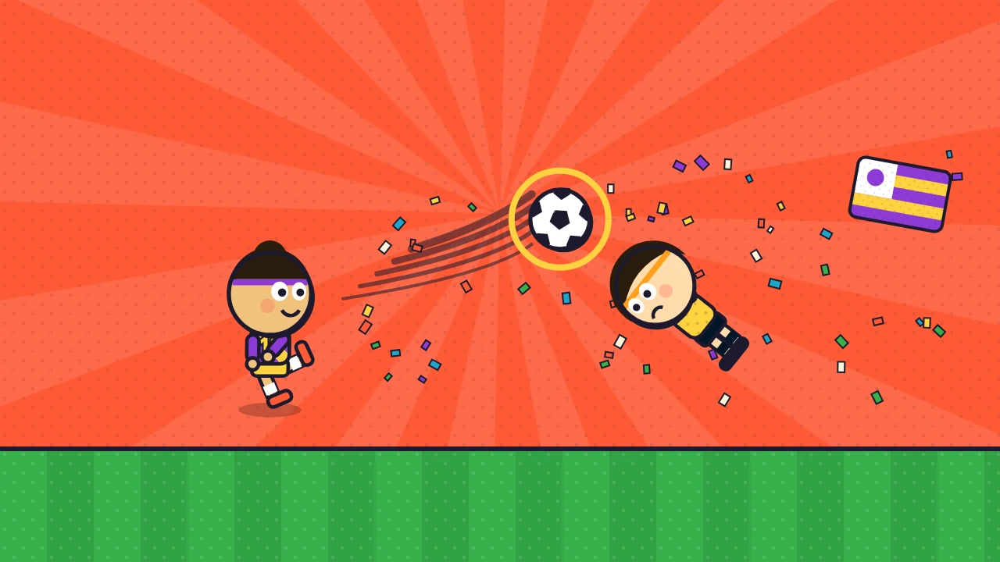

Curlicup
Curl spot-kicks, dive as the keeper and win big-head 1v1 matches with 48 fictional nations. Daily kicks, a weekly cup and 36 stages.
Curlicup is a bright, bobble-headed football game that packs three ways to play into one pocket-sized stadium. Flick to curl spot-kicks into the top corner, tap to throw your keeper across the goal, then jump into fast 1v1 arcade matches where big heads, bicycle swings and charged-up power shots decide the score. Everything is drawn in a bold retro sticker-album style: halftone grass, chunky ink outlines, confetti and a crowd that roars when the net ripples.
Pick one of 48 original fictional nations, each with its own kit, flag, captain and signature power shot: the flat Rocket, the bending Curler, the dropping Dipper or the wobbling Zigzag. Then choose how you want to play.
Cup Run is a 36-stage journey through six groups, from a park kickabout to a snowy mountain ground and a floodlit final. Stages mix spot-kick drills, keeper drills, full shootouts and timed 1v1 matches, with walls, wind, target rings and keepers who shuffle along the line. Every stage shows its three stars before kick-off, the HUD tracks them as you play, and the result screen explains each star you earned or missed. Stars unlock new balls and boots.
The Daily Spot-Kick is five kicks and five saves that are the same for everyone on the same date. Play it every day to build your streak. The Weekly Cup draws an eight-nation bracket every Monday: win the quarter-final, semi-final and final to lift the trophy, with a penalty shootout if a match ends level. Quick Match is a one-minute game against an easy, normal or hard rival, or against a friend on the same device with split controls, which is great on a tablet in landscape.
Beat a nation to add its captain's sticker to your album. After every run you see your standing on the board: rank, percentile and the next score to beat. Share a scoreline card with your flag and send a beat-my-keeper link: your friend faces your exact shots as ghost marks and sees the score to top. The game works offline and saves progress on your device.